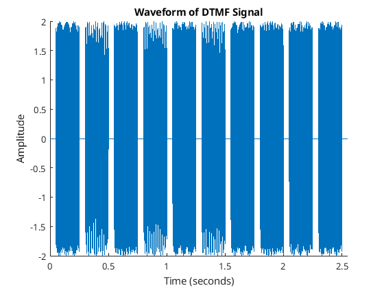
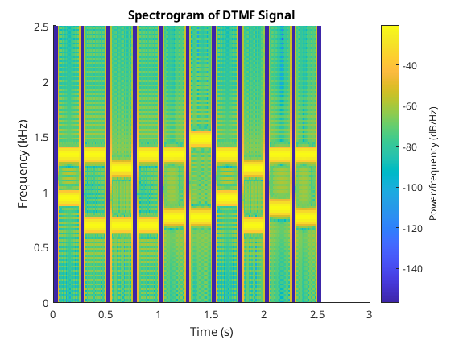
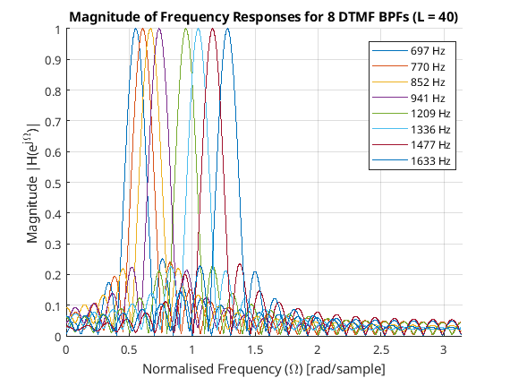
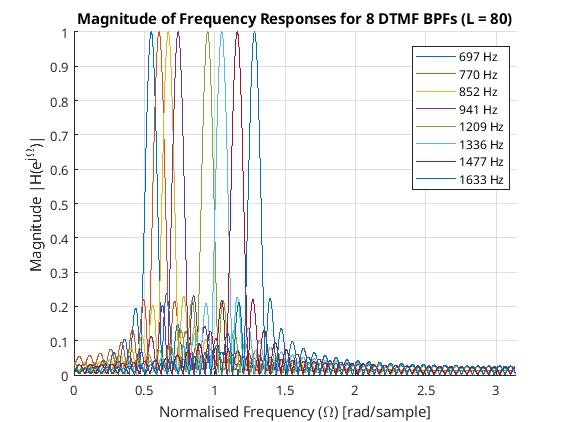

% ME705 Lab 1 % 1.7 Preperation % Author: Adam Wright clc clear close all % -- 1.71 -- % % Task 1 % fs = 8000; % Hz x = dtmfdial('0212560185'); sound(x, fs); % % Task 2 % figure(1); hold on; t = (0:length(x)-1) / fs; plot(t, x); title('Waveform of DTMF Signal'); xlabel('Time (seconds)'); ylabel('Amplitude'); xlim([0 max(t)]); hold off figure(2); hold on; win_length = 200; window = hamming(win_length); noverlap = round(win_length * 0.5); nfft = 400; spectrogram(x, window, noverlap, nfft, fs, 'yaxis'); title('Spectrogram of DTMF Signal'); ylim([0 2.5]); hold off; % -- 1.72 -- % % Task 1 % N = 4096; L = 50; omega_c = 0.2 * pi; nn = 0:L; b_unscaled = cos(omega_c * nn); [H, ~] = freqz(b_unscaled, 1, N); peak_val = max(abs(H)); beta = 1 / peak_val; % 0.038424 b = beta * cos(omega_c * nn); fprintf("1.7.2 value of beta: %.3f", beta); % % Task 2 % [H, W] = freqz(b, 1, N); passband_idxs = find(abs(H) > 1/sqrt(2)); f_cl = W(passband_idxs(1)); % rad/sample f_ch = W(passband_idxs(end)); % rad/sample bw = f_ch - f_cl; % rad/sample fprintf('\n1.72: Passband %6.2f - %6.2f (BW: %6.2f)', f_cl, f_ch, bw); % % Task 3 % f_cl_hz = (f_cl * fs) / (2 * pi); % 735.4 Hz f_ch_hz = (f_ch * fs) / (2 * pi); % 871.1 Hz bw_hz = (bw * fs) / (2 * pi); % 135.7 Hz fprintf('\n1.72: Passband %6.1f Hz - %6.1f (BW: %6.1f)', f_cl_hz, f_ch_hz, bw_hz); % -- 1.8.1 -- % % Task 3, 4 % fcent = [697,770,852,941,1209,1336,1477,1633]; % DTMF centre frequencies LL = [40, 80]; % Array of filter lengths to compare N = 4096; % Outer loop to go through each filter order (40, then 80) for k = 1:length(LL) L = LL(k); % 1. Generate the eight bandpass filters for the current L hh = dtmfdesign(fcent, L, fs); % 2. Open a new figure for each L (so they plot separately) figure; hold on; % Print a header to the command window to keep results organized fprintf('\n--- Passband Widths for L = %d ---\n', L); % 3. Loop through each filter to plot and find bandwidths for i = 1:length(fcent) % Extract the i-th filter's impulse response (row vector) h_i = hh(i, :); % Calculate the frequency response [H, W] = freqz(h_i, 1, N); % Plot the magnitude response plot(W, abs(H), 'DisplayName', [num2str(fcent(i)), ' Hz']); % Find cut-off frequencies (where magnitude > 1/sqrt(2)) passband_idxs = find(abs(H) > 1/sqrt(2)); % Ensure we found a valid passband to avoid errors if ~isempty(passband_idxs) % Extract lower and upper cut-off frequencies in rad/sample f_cl = W(passband_idxs(1)); f_ch = W(passband_idxs(end)); % Calculate passband width in rad/sample, then convert to Hz bw_rad = f_ch - f_cl; bw_hz = (bw_rad * fs) / (2 * pi); % Print the result to the command window fprintf('Center Freq: %4d Hz | Bandwidth: %6.1f Hz | Passband (Hz): [%4.2f, %4.2f]\n', fcent(i), bw_hz, (f_cl * fs) / (2*pi), (f_ch * fs) / (2*pi)); else fprintf('Center Freq: %4d Hz | Bandwidth: Not Found\n', fcent(i)); end end % 4. Format the plot according to the specifications title(['Magnitude of Frequency Responses for 8 DTMF BPFs (L = ', num2str(L), ')']); xlabel('Normalised Frequency (\Omega) [rad/sample]'); ylabel('Magnitude |H(e^{j\Omega})|'); xlim([0, pi]); % Limit x-axis to 0 <= Omega <= pi grid on; legend('Location', 'best'); % Add a legend to tell the filters apart hold off; end % % Task 6 % L_min = getMinOrder(fcent, fs); fprintf('\nThe minimum value of L that satisfies all specifications is L = %d\n', L_min); % -- 1.8.4 -- group = 15; fname = sprintf('unknown_number_%d.mat', group); load(fname); keys = dtmfrun(xx, L_min, fs); fprintf('\ndecoded keys for group %d: %s\n', group, keys); % -- 1.8.5 -- target_number = '01205978436'; min_snr = getMinSNR(target_number, L_min); fprintf('The minimum SNR for a >= 90%% success rate is: %d dB\n', min_snr); % -- 1.8.6 -- % % Hamming Window % fprintf("--- Hamming ---\n"); L_new = getMinOrder(fcent, fs, @dtmfdesignHamming); fprintf('The minimum value of L that satisfies all specifications is L = %d\n', L_new); min_snr = getMinSNR(target_number, L_min); fprintf('The minimum SNR (L=%d) for a >= 90%% success rate is: %d dB\n', L_min, min_snr); % % all improvments % fprintf("--- ALL ---\n"); min_snr = getMinSNR(target_number, L_min, false); fprintf('The minimum SNR (L=%d) for a >= 90%% success rate is: %d dB\n', L_min, min_snr); min_snr = getMinSNR(target_number, L_min, true); fprintf('The minimum SNR (L=%d) for a >= 90%% success rate is: %d dB\n', L_min, min_snr); min_snr = getMinSNR(target_number, L_min*2, false); fprintf('The minimum SNR (L=%d) for a >= 90%% success rate is: %d dB\n', L_min, min_snr);
1.7.2 value of beta: 0.038 1.72: Passband 0.58 - 0.68 (BW: 0.11) 1.72: Passband 735.4 Hz - 871.1 (BW: 135.7) --- Passband Widths for L = 40 --- Center Freq: 697 Hz | Bandwidth: 167.0 Hz | Passband (Hz): [620.12, 787.11] Center Freq: 770 Hz | Bandwidth: 172.9 Hz | Passband (Hz): [687.50, 860.35] Center Freq: 852 Hz | Bandwidth: 172.9 Hz | Passband (Hz): [765.62, 938.48] Center Freq: 941 Hz | Bandwidth: 169.9 Hz | Passband (Hz): [855.47, 1025.39] Center Freq: 1209 Hz | Bandwidth: 167.0 Hz | Passband (Hz): [1126.95, 1293.95] Center Freq: 1336 Hz | Bandwidth: 169.9 Hz | Passband (Hz): [1250.00, 1419.92] Center Freq: 1477 Hz | Bandwidth: 170.9 Hz | Passband (Hz): [1394.53, 1565.43] Center Freq: 1633 Hz | Bandwidth: 169.9 Hz | Passband (Hz): [1546.88, 1716.80] --- Passband Widths for L = 80 --- Center Freq: 697 Hz | Bandwidth: 85.0 Hz | Passband (Hz): [656.25, 741.21] Center Freq: 770 Hz | Bandwidth: 85.9 Hz | Passband (Hz): [726.56, 812.50] Center Freq: 852 Hz | Bandwidth: 85.0 Hz | Passband (Hz): [810.55, 895.51] Center Freq: 941 Hz | Bandwidth: 85.9 Hz | Passband (Hz): [899.41, 985.35] Center Freq: 1209 Hz | Bandwidth: 85.9 Hz | Passband (Hz): [1166.02, 1251.95] Center Freq: 1336 Hz | Bandwidth: 85.9 Hz | Passband (Hz): [1293.95, 1379.88] Center Freq: 1477 Hz | Bandwidth: 86.9 Hz | Passband (Hz): [1433.59, 1520.51] Center Freq: 1633 Hz | Bandwidth: 86.9 Hz | Passband (Hz): [1589.84, 1676.76] The minimum value of L that satisfies all specifications is L = 86 decoded keys for group 15: 099239617 The minimum SNR for a >= 90% success rate is: 8 dB --- Hamming --- The minimum value of L that satisfies all specifications is L = 137 The minimum SNR (L=86) for a >= 90% success rate is: 8 dB --- ALL --- The minimum SNR (L=86) for a >= 90% success rate is: 8 dB The minimum SNR (L=86) for a >= 90% success rate is: 0 dB The minimum SNR (L=86) for a >= 90% success rate is: 8 dB



